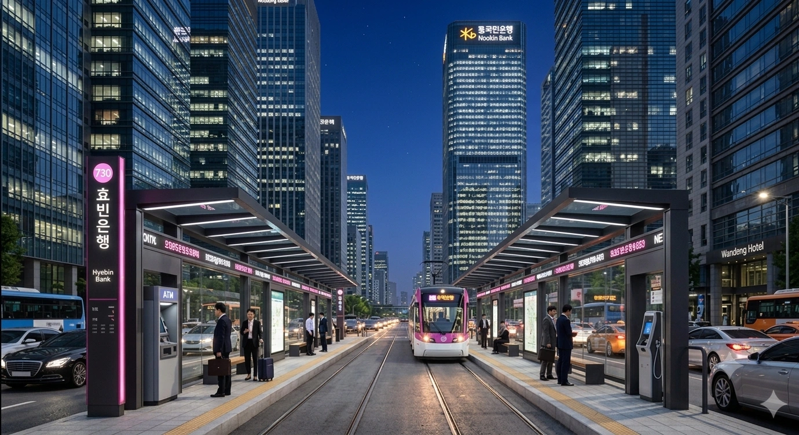

"덕빈을 넘어 세계로, HB 효빈은행"
HB금융그룹 계열의 전국구 지방은행. 본점은 효빈광역시 중구 조효로 23 (중보동)에 위치해 있다.
효빈광역시와 덕빈북도, 덕빈남도를 아우르는 덕빈권의 절대적인 맹주 은행이다. 설립 초창기부터 해양 물류를 바탕으로 압도적인 자본력을 자랑했으며, IMF 사태 당시 인근의 경쟁자였던 덕남은행(덕주시)을 집어삼켰고, 한때 자신들의 그늘을 벗어나겠다며 뛰쳐나갔던 덕북은행(빈주시)마저 훗날 HB금융지주라는 한 지붕 아래로 편입시키며 명실상부한 덕빈권 금융 1인자로 군림하고 있다.
덕남은행을 합병한 역사 때문에 덕빈남도(특히 동부권) 어르신들은 아직도 "우리 돈 뺏어간 놈들"이라며 효빈은행을 썩 달가워하지 않는 경향이 있다. 하지만 자식들이 쌈짓돈 용돈 보내주면 다들 잘만 쓴다.
효빈은행의 역사는 곧 덕빈권 자본의 흐름이자, 효빈시가 어떻게 지역 패권을 움켜쥐었는지를 보여주는 척도라 할 수 있다.
1953년 한국전쟁 직후, 북한군에 의해 효빈시에 있던 도청 건물이 폭파되자 덕빈북도청은 70년 만에 지리적 중심지였던 빈주시로 복귀하게 된다. 그러나 도청이라는 껍데기가 빈주로 갔을 뿐, 이미 진짜 돈과 상권, 항만 인프라는 모조리 효빈시에 집중되어 있었다.
1967년 박정희 정부가 '1도 1지방은행' 정책을 폈을 때, 도청 소재지였던 빈주시는 당연히 자신들 앞마당에 은행이 생길 줄 알았으나, 정작 알짜배기 자본을 쥔 효빈시 상공인들이 1967년 7월 22일, '효빈시민 1주 갖기 운동'을 전개하며 보란 듯이 효빈은행(068)을 낼름 설립해 버린다. 이는 효빈이 덕빈권의 경제적 주도권을 완전히 틀어쥐었음을 알리는 신호탄이었다.
1970년대 후반 효빈시 인구가 폭발적으로 팽창하면서, "1981년 효빈시가 직할시로 승격되어 덕빈북도에서 완전 분리된다"는 소식이 확정된다. 이에 위기감을 느낀 빈주시와 덕빈북도청은 "효빈이 남의 나라(직할시)가 되면 효빈은행도 남의 은행이 된다"며 격렬하게 반발했고, 결국 효빈이 독립하기 직전인 1980년, 부랴부랴 도민들의 자본을 모아 덕북은행(091)을 설립해 분가(?)해 버린다.
효빈은행 입장에서는 "어차피 우리 돈 끌어다 쓰던 곳이 독립해 봤자지"라며 쿨하게 보내주었으나, 내심 지역 거점 은행의 파이를 나눠 먹게 된 터라 꽤 신경을 곤두세웠다.
1997년 IMF 외환위기가 터지면서 지방은행들은 풍전등화의 위기를 맞았다. 이때 남쪽의 경쟁자이자 덩치가 엇비슷했던 덕남은행(덕주시 소재)이 부실 경영의 여파로 1998년에 속절없이 퇴출 판정을 받게 된다.
이 틈을 놓치지 않고 효빈은행은 P&A(자산부채이전) 방식으로 덕남은행을 전격 인수하며 단숨에 몸집을 두 배로 불렸다. 당시 효빈은행장이 인터뷰에서 "우리는 살았고 저쪽은 죽었다"는 뉘앙스로 승자의 여유를 부렸다가 덕주시민들의 분노를 사 계란 세례를 맞은 흑역사도 있다. 덕분에 아직도 덕빈남도(특히 동부) 지점에 가면 어르신들이 "너네가 우리 은행 먹어서 좋냐?"고 직원들에게 시비를 거는 진풍경이 가끔 연출된다.
시간이 흘러 2013년, 효빈은행은 몸집을 불려 HB금융지주를 출범시키고 완전 자회사로 편입되며 주식시장에서는 상장폐지된다.
그리고 이 HB금융지주의 산하로, 1980년 효빈의 그늘을 벗어나겠다며 결사항전으로 뛰쳐나갔던 덕북은행마저 자본의 한계를 이기지 못하고 편입되고 만다. 효빈은행 입장에서는 그 옛날 가출했던 동생이 제 발로 다시 호적 밑으로 기어들어 온 셈이라, 겉으로는 '투 뱅크(Two Bank) 체제'를 존중한다면서도 전산과 혜택, 상품 구성을 효빈은행 기준으로 모조리 통합시키며 실질적인 지배력을 행사하고 있다. 자본주의에선 결국 돈 많은 형이 최고다.
2026년 1월 기준.
| 주주명 | 지분율 |
|---|---|
| HB금융지주 | 100% |
| 대수 | 이름 | 재임 기간 |
|---|---|---|
| 1 | 유언신 | 1967 ~ 1973 |
| 2 | 이병석 | 1973 ~ 1979 |
| 3 | 박정훈 | 1979 ~ 1985 |
| 4 | 최영수 | 1985 ~ 1991 |
| 5 | 정기영 | 1991 ~ 1997 |
| 6 | 강성훈 | 1997 ~ 2002 |
| 7 | 조민기 | 2002 ~ 2007 |
| 8 | 유재훈 | 2007 ~ 2011 |
| 9 | 김종훈 | 2011 ~ 2015 |
| 10 | 박명훈 | 2015 ~ 2019 |
| 11 | 정준호 | 2019 ~ 2023 |
| 12 | 최현석 | 2023 ~ 현재 |
"따뜻한 금융, 든든한 동반자, 세계로 뻗어가는 HB"
효빈은행은 고객 중심의 가치를 최우선으로 하며, 덕빈권을 넘어 글로벌 금융 그룹으로 도약하겠다는 의지를 담고 있다.
正道 (정도) · 誠實 (성실) · 奉仕 (봉사)
모바일 앱 이름은 'HB 웨이브(Wave)'. 원래는 '효빈은행 스마트뱅킹'이라는 구수한 이름이었으나 2023년 대대적으로 리브랜딩했다. 효빈시의 상징인 '바다'와 '금융의 새로운 물결'을 의미한다고 한다. UI가 직관적이고 속도가 빨라 지방은행 앱 치고는 평점이 매우 높다.
앱 설정에서 '효빈 모드(Hyobin Mode)'를 활성화하면 로딩 화면에 효빈시 마스코트 한바다가 등장하여 "오늘도 맑음입니다!"라고 인사하거나, 송금 완료 시 "전속 전진! 송금 완료!"라는 조경이 성우의 음성 안내가 나온다. 이 기능 때문에 타지방 오타쿠들이 굳이 효빈은행 계좌를 개설한다는 소문이 있다. 최근 업데이트에서는 효빈 도시철도 캐릭터인 '레일 루미네' 테마도 추가되어 선택의 폭이 더욱 넓어졌다. (참고로 산하 덕북은행의 '덕북ON' 앱은 껍데기만 에메랄드 그린색이고 백로가 날아다닐 뿐, 사실상 이 앱과 쌍둥이다.)
HB금융그룹 산하의 자회사들은 효빈시의 독특한 문화 산업과 밀접하게 연계되어 있다.
지역 스포츠 발전을 위해 2개의 실업팀을 운영하고 있다. 팬 서비스가 남다르기로 유명하다.
효빈은행 남자 배드민턴단. 1995년 창단되었다. 전국체전 단체전에서 여러 차례 금메달을 획득한 명문 구단이다.
응원단장이 무려 한바다(물론 인형 탈 알바)이며, 경기 승리 시 선수들이 관중석을 향해 킹블레이드를 흔드는 세리머니를 펼친다. 상대 팀이 당황해서 제 실력을 못 낸다는 후문이 있다.
효빈은행 여자 양궁단. 2000년 창단. 올림픽 금메달리스트를 다수 보유하고 있다.
감독님이 러브 라이브!의 찐팬이라, 훈련 구호가 "전속 전진(Yousoro)!"이다. 선수들이 활을 쏠 때 과녁 중앙을 '뮤즈(μ's)'라고 생각하고 쏜다는 도시전설이 전해진다. 10점 만점에 10점!